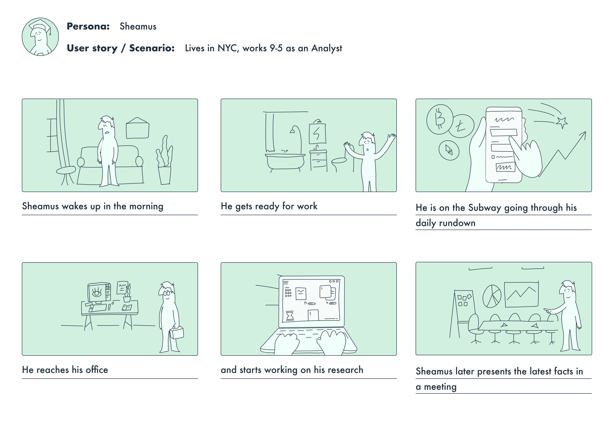
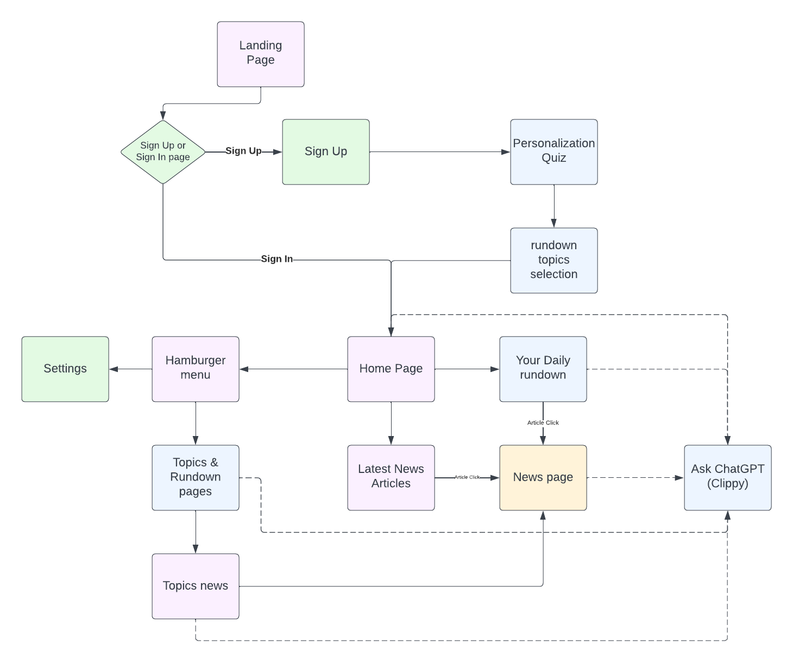
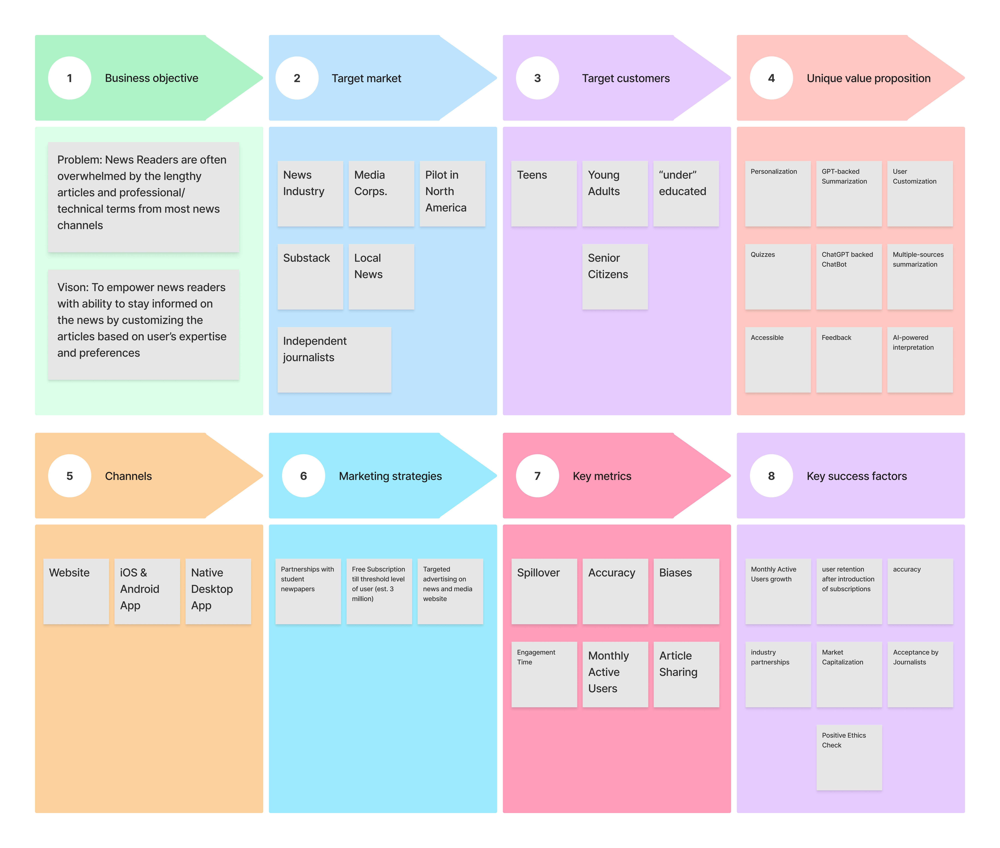

rundown is a GPT-backed solution for customizing and personalizing news based on user's proficiency levels on different topics and preferences. The product aims to utilize GPT to summarize complex news articles and present them in a digestible format and become a separate version of the existing Microsoft Start app. e.g. If a user has a high proficiency level in finance, medium proficiency level in global politics, and low proficiency level in sports, the user will get complex summaries with technical jargon for finance news, medium difficulty level for global politics news, and easy-to-understand summaries for sports news. The user gets a daily rundown with summaries (between 100-250 words) of latest articles from all topics and the user can also define topic-specific rundowns to get summaries of articles belonging to a specific topic (e.g. finance rundowns, entertainment rundowns, politics rundown, sports rundown, etc.). The product also has "clippy" which is a ChatGPT-backed chatbot which the user can access from top navigation menu to seek more information and explanation specific to the article or the topic. This project was made during the BigCo Studio program at Cornell Tech with Microsoft company advisors and stakeholders.
Market Research
During our market research, we tried to understand the growing market trends and the behaviors of users. According to Statista, the revenue in the News & Magazines market is projected to reach US$8.98bn in 2022 and is expected to show an annual growth rate (CAGR 2022-2027) of 12.72%, resulting in a projected market volume of US$17.40bn by 2027. A global comparison reveals that most revenue is generated in the United States (US$4,392.00m in 2022). In-app purchase (IAP) revenue in the News & Magazines market is projected to reach US$529.40m in 2022. Paid app revenue in the News & Magazines market is projected to reach US$14.26m in 2022. Advertising revenue in the News & Magazines market is projected to reach US$8,439.00m in 2022. The number of downloads in the News & Magazines market is projected to reach 1.21bn downloads in 2022. The average revenue per download currently is expected to amount to US$7.45.
User Research
During our initial user research we tried to understand the needs and pain points of the users. We asked users how they consume their news, their sources, and their pain points. A lot of users said that they consumer their news from mainly social media platforms such as Twitter, Facebook, Instagram, etc. and some news websites. They also said that they sometimes don't understand certains complex articles and often loose interest. Users also highlight their growing concerns regarding misinformation and biases in articles and their reluctantcy regarding paying multiple subscription fees.

Ideation
Based on our research, we decided to address the problem of long, lengthy, and complex articles. We also looked at Apple News as a news aggregator and set our vision to provide a comprehensive and elegant user experience with a competitive subscription-based and advertising-based revenue models. The product also aims to adopt a visual-heavy approach with a "story-like" design and infinite scroll in reverse chronological order for main pages.

Experimentation
To evaluate our risks and the feasibility of our product, we decided to conduct three different experiments to analyse them. These experiments were tested on individuals based in the United States from 18 to 65 years old. A figma prototype was made to visualize and test the overall design of the product. Three experiments were designed to test our initial assumptions: digestible format for different proficiency levels, accuracy of summarized articles, and the spill over of the product. These experiments, research, prototype, and the overall product pitch can be viewed in the deck below.
High-fidelity Prototype
Go-To Market Strategy

This idea was made possible with help of my Cornell Tech teammates, Alexa Muratyan, Eliska Patockova, Rajakulasekhar Ramakrishnan, and Saksham Beotra. We decided to team up during our fall semester happy hours and the team synergy in spring was impeccable. Overall deliverables of this project include Market Research, User Research, Ideation, De-risking, Market Strategy, Business Decks, Low-fidelity prototypes, High-fidelity prototypes and Project Roadmap.